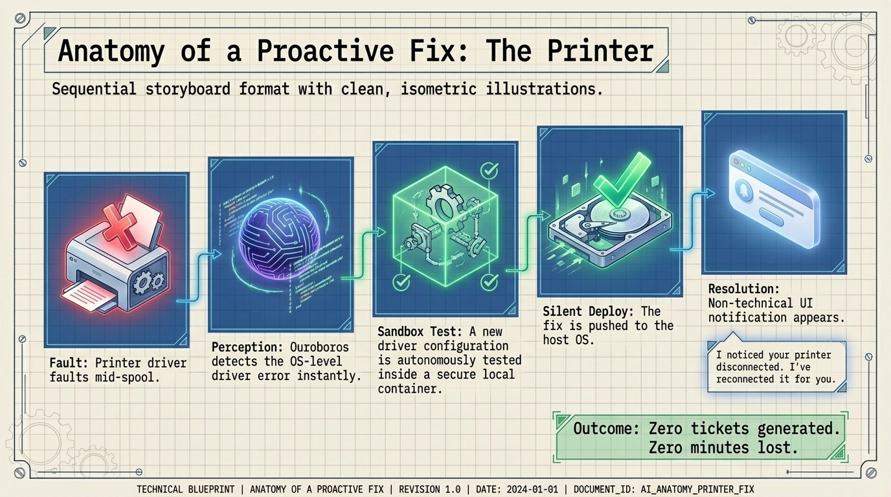
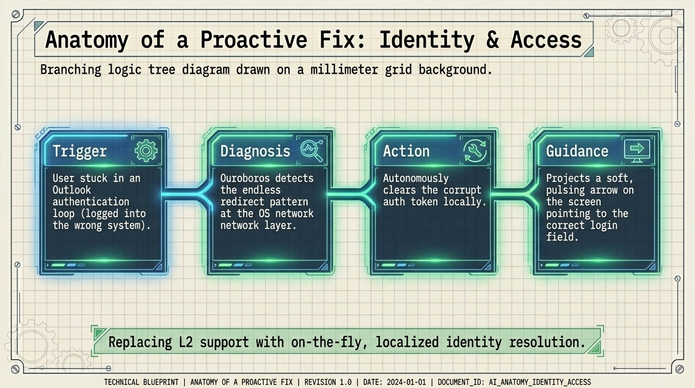
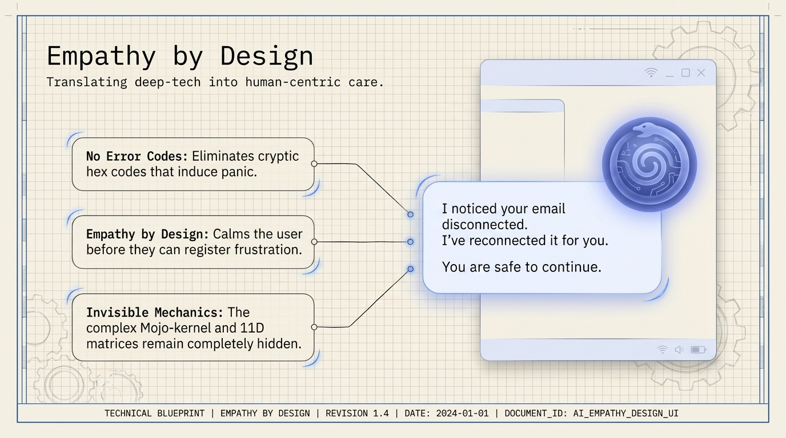
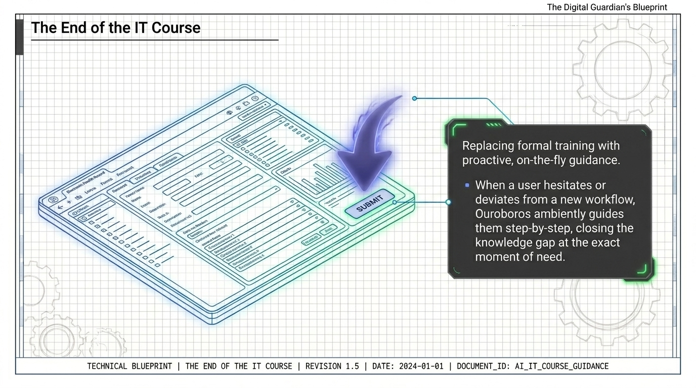
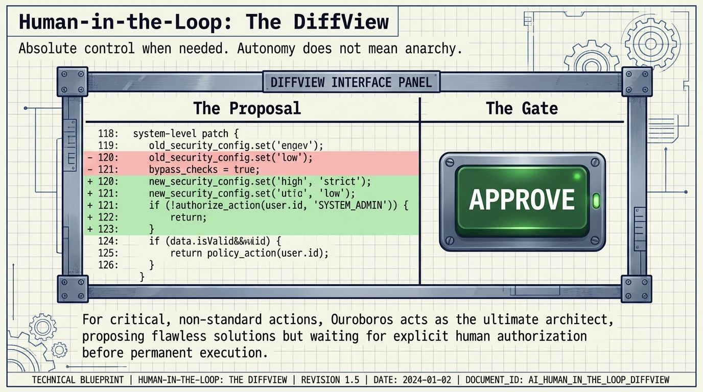

Trigger
De gebruiker zit vast in een Outlook-authenticatielus na inloggen op het verkeerde systeem.
Proactieve oplossingen
Ouroboros vervangt Level 1- en 2-support door on-the-fly gelokaliseerde oplossing van terugkerende IT-frictie.

Anatomie van een proactieve fix
Identiteit en toegang
De gebruiker zit vast in een Outlook-authenticatielus na inloggen op het verkeerde systeem.
Ouroboros herkent het eindeloze redirectpatroon op OS- en netwerklaag.
Het corrupte authenticatietoken wordt lokaal autonoom gewist.
Een zachte pulserende pijl wijst naar het juiste loginveld.

Empathy by design
Ik merkte dat uw e-mail was losgekoppeld. Ik heb hem opnieuw verbonden. U kunt veilig doorgaan.
Cryptische hex-codes die paniek oproepen verdwijnen uit het gebruikersmoment.
De gebruiker wordt gerustgesteld voordat frustratie registreert.
De complexe Mojo-kernel en 11D-matrices blijven verborgen.


Wanneer een gebruiker aarzelt of afwijkt van een nieuwe workflow, begeleidt Ouroboros stap voor stap en sluit het kennishiaat precies op het moment van behoefte.

Autonomie betekent geen anarchie. Voor kritieke, niet-standaard acties stelt Ouroboros de oplossing voor en wacht het op expliciete menselijke toestemming vóór permanente uitvoering.
Ouroboros AI
De ROI-pagina vertaalt deze momenten naar gewonnen tijd, bespaard geld en herstelde focus.